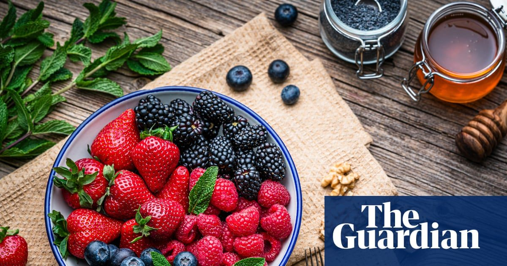

Они вкусные, популярные и универсальные – но насколько полезны ягоды?
Эксперты говорят, что если вы едите какую-либо ягоду – клубнику, ежевику, смородину, малину, чернику – вы получаете пользу, посыпанную поверх йогурта, смешанную в смузи или запеченную в крошки, ягоды являются одними из любимых фруктов американцев.
К счастью, ягоды настолько же полезны, насколько они вкусны и универсальны: низкокалорийны, полны витаминов и антиоксидантов и являются хорошим источником клетчатки.
Исследования показывают, что в зависимости от вида ягод